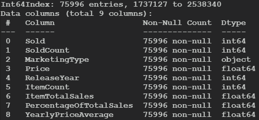
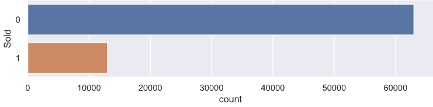
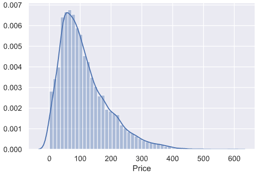
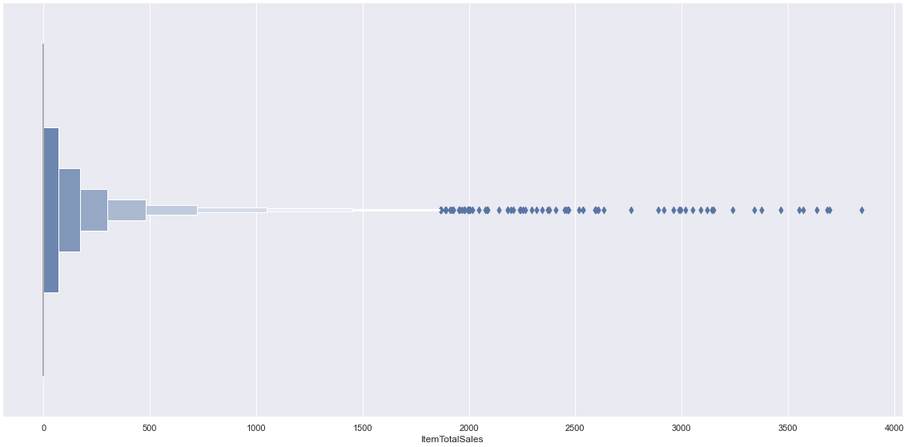
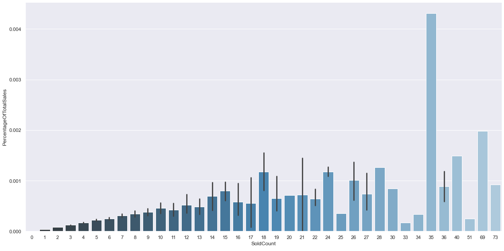
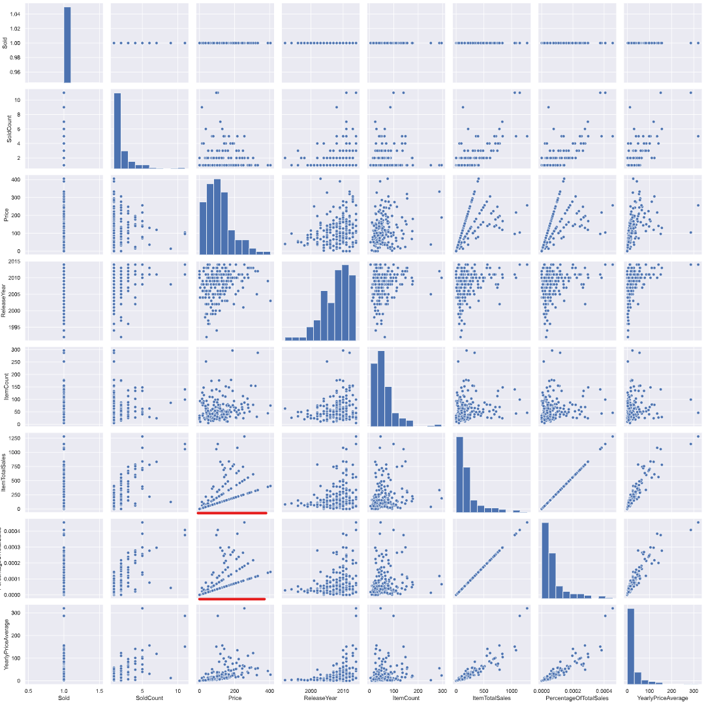
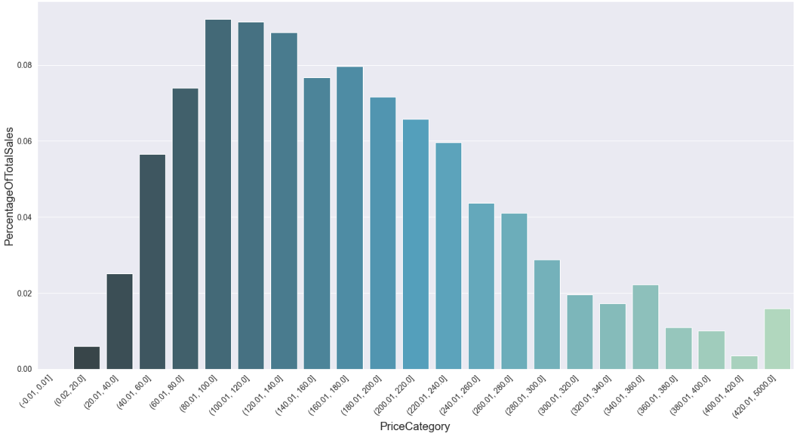
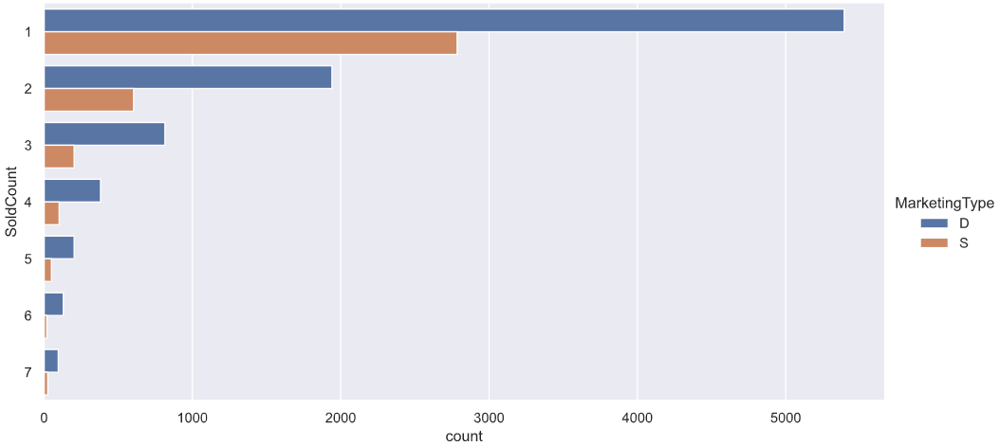
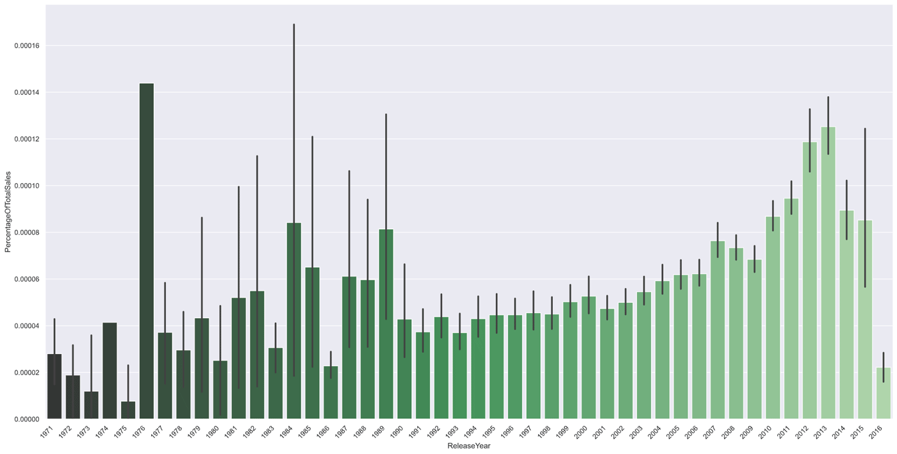

Historical Sales EDA
*This is not an analysis report, just an example of informal data analysis.
This data-set contains historical sales data. The business objective in mind is to propose inventory items which to could be replaced with something that might sell better. I imported the data and removed columns that weren't useful. I also renamed some columns so their names better reflected the data they represented. To start, I calculated three new useful columns:
df['ItemTotalSales'] = df['SoldCount'] * df['Price']
df['PercentageOfTotalSales'] = df['ItemTotalSales'] / (df['ItemTotalSales'].sum())
df['YearlyPriceAverage'] = df['ItemTotalSales'] / ((df_active['ReleaseYear'].unique().max()) - df['ReleaseYear'])

Let's take a look at some of the distributions.
Items sold vs unsold:
Only a small portion of the inventory sells.

Price distribution of items that have sold:
It's right-skewed and looks a bit log-normally distributed.

Total Sales by Item (Sold and Unsold):
There seems to be many items that haven't sold any units. We also see that the large majority of the total sales is spread across many different items with low sales on a per-item basis.

Items grouped by number sold, with mean percentage of total sales:
Here it seems that we have a huge spike at 35 items sold. While not directly related to our business objective, this is something that is worth looking into, as it could possibly be some sort of bottle-neck. Unfortunately the data is limited regarding this, so we'd reach out to the appropriate people instead.

Pair-plot:
Now lets bring up a pair-plot for some bi-variate analysis. Because of the large amount of data, we'll take a sample of 200 from the items that have sold.

The plot underlined in red above indicates that there's a correlation between Price of an item and its TotalPercentageOfSales, so let's investigate further.
df['PercentageOfTotalSales'][df['Price'] < 100].sum()
0.252...
df['PercentageOfTotalSales'][df['Price'] < 50].sum()
0.0563...
25% of the total sales for items Priced under 100 and just 5.6% for under 50. Now let's look at the volume for that price range.
df[(df['Price'] < 50) & (df['Sold'] == 1)].count() / df[(df['Price'] >= 50) & (df['Sold'] 1)].count()
0.282...
So 28% of the item types sold make up 5.6% of total sales.
Price categories as total percentage of total sales:
A sharp rise from the 0 to 80 dollar price tag, followed by a gradual descent. There are a few outliers grouped into a 420 - 5k price range bin on the right.

Marketing type with sold counts:
Among the two marketing types used, it would seem that type D is more effective. However, this is too little information to go on. Perhaps the marketing type D is used with product lines that tend to sell better, or perhaps it's more effective, but also more expensive. So a better question is whether it's more 'cost'-effective.

Average Sales Percentage Total by Release Year:
Older items still seem to be worth keeping around. Although we can see we have fewer older items in our inventory, as is suggested by the large confidence interval ranges for older years.

Conclusion:
The data shows that items under the fifty-dollar price generate a much smaller portion of the sales even though they account for thirty-three percent of the inventory items sold. I would be wary of adopting new items within this price range, and it wouldn't be a loss to remove the items in that price range that haven't sold. If pressed for a second criteria, I would say evaluate older release year items on a case-by-case basis when adopting new ones, but it would be safe to remove unsold items with old release date (perhaps keeping items with larger price tags in stock).
Finally, there is a clear opportunity for more categories of data collection. Another great metric that may be worth asking for are the yearly or quarterly sales to see an increasing or decreasing buying trend on a per-item basis.